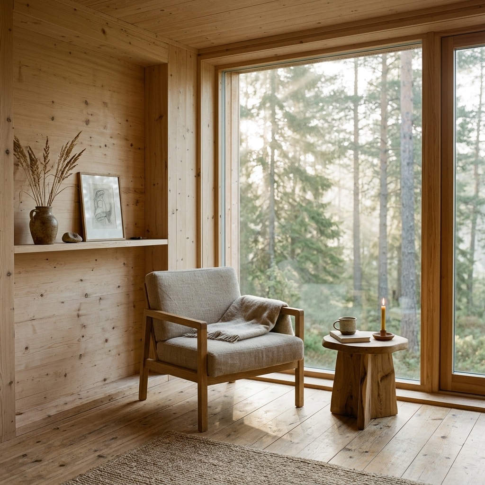
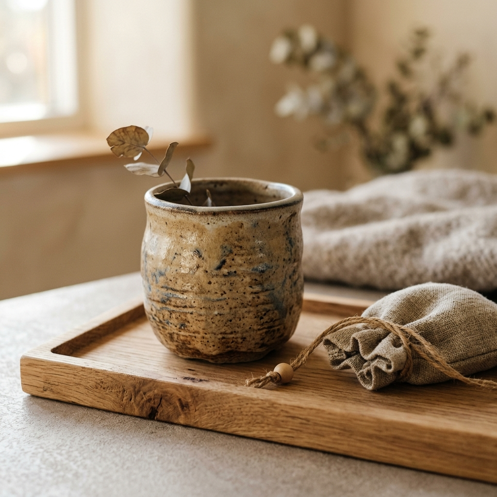

Make room for a slower breath.
Seasonal rituals for mornings, pauses, and evenings—composed with care for how a home feels, not just how it looks.

The Three Daily Rituals
Ten minutes designed to partition the day, restoring space to a busy mind.
Morning: Brew & Settle
A threshold before the rush.
Midday: Pause & Realign
A boundary in the middle of it all.
Evening: Dim & Release
A softening before sleep.
Morning: Brew & Settle
Begin the day not by catching up, but by standing still. As your tea or coffee brews, light the cedar strand. Follow the 10-minute rhythmic breathing guide as the space fills with dry wood notes. Let the light accumulate.
Midday: Pause & Realign
Stepping away from screens to mark the midday line. Arrange three polished stone markers on your oak tray. Mist the Hinoki water over your wrists, take ten slow breaths, and reset the focus of your afternoon.
Evening: Dim & Release
The transition out of doing. Dim the overhead lights, activate the warm lamp, and light the sandalwood stick. Breathe as the dark sets in, letting the ambient tone settle your heartbeat for rest.

The Tools of Stillness
Every season, a carefully curated selection of physical objects arrives at your door—designed to ground your senses and quietly command space in your home.
-
The Ceramic Scent Vessel
Thrown by hand in Gothenburg, using high-iron sandstone clay. Retains the warmth of incense and diffuses mist naturally.
-
The Raw Oak Tray
Carved from sustainably harvested Danish oak. Unlacquered to allow the natural wood grain and oils to shift over time.
-
The Linen Storage Pouch
Woven from raw Belgian flax, holding your incense sticks and misting bottle clean and out of sight.
Sensory Philosophy
Three principles that shape our ritual designs.
Restrained Materials
No plastics, no electronics, no glowing indicator lights. We build rituals with ceramics, linen, natural woods, and organic plant extracts that grow more beautiful as they age.
Restorative Pacing
A 10-minute boundary is long enough to alter your heart rate and shift brainwaves, yet short enough to protect from the busiest calendar. A realistic, daily rest.
Seasonal Alignment
Our nervous systems react differently to winter frost and summer humidity. Every equinox, we update your ritual kit to match the seasonal daylight, temperature, and indoor air patterns.
It changed how my evenings begin. Instead of scrolling, I light the incense and listen to the companion sound. Ten minutes that feel like a full hour of release.— Elena, Oslo
The morning ritual has become my threshold. Before the emails start, there is just the steam and the scent.— Marcus, Stockholm
As a designer working from home, the midday pause is the only boundary that actually holds.— Sophia, Copenhagen
Begin with the first ritual.
Receive your first room. The Autumn Equinox kit ships within two business days.